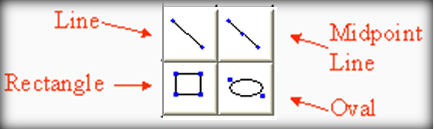
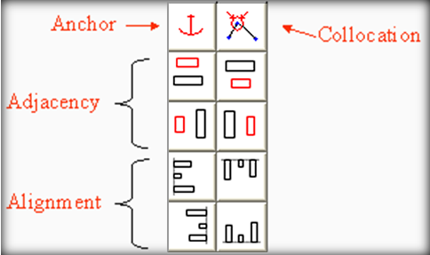

Object creation buttonsTo create an object, click on the iconic button. then move the cursor into the main drawing area (the cursor will change into crosshairs). Click to start placing the component and drag the cursor with the mouse button held down to shape the object while placing it. Release the button to finish placement. While placing an object, the initial placement point and the point being dragged during placement will "snap" to the points of previously placed objects, automatially forming a collocation constraint between those points. This makes it easier to construct a figure of connected parts. |
|
Constraint imposition buttonsThe four categories of constraints that can be imposed are anchor, collocation, adjacency, and alignment constraints. See below for more detail. |
|
Selecting points and objectsTo select a point, move the cursor inside the point's box and click the mouse. When over a point, the cursor is outlined in green. Clicking selects the point and shows it as a solid green box. Multiple points can be selected by clicking anywhere and dragging to form a gray selection box, or holding down the control key and clicking on each point.To select an entire object, select all of its points, or click inside its bounding box while holding down the shift key. To select a constraint object, click on it while holding down the shift key. While the shift key is held down, a blue box will be drawn around any object or constraint object the mouse cursor is over. |
Keyboard commands and shortcutsThe following keyboard commands and shortcut keys are available:
|
Anchor constraintsAn anchor constraint keeps a point anchored to its current location. To establish an anchor constraint, select one or more points and then click on the anchor button. A red anchor under the anchored point represents an anchor constraint.Collocation constraintsA collocation constraint is established between two or more points to make them stay together. To establish a collocation constraint, select two or more points and then press the collocation button. Alternately, drag a point with the mouse and it will "snap" to another point, establishing a collocation constraint when the button is released. A red circle with two inward-pointing arrows represents a collocation constraint. |
Adjacency constraintsAn adjacency constraint is established between two objects to ensure that one stays above, below, to the left of, or to the right of the other. To establish an adjacency constraint, select an entire object as the source (the black rectangle on the icon), click one of the adjacency icon buttons, and then click on the target object. A red line connects the centers of objects with adjacency constraints. A red circle indicates the source object.Alignment constraintsAn alignment constraint ensures that two or more objects stay lined up as either of them are moved about. To establish an alignment constraint, select two or more objects and then click on the appropriate button. A vertical or horizontal line (as appropriate) represents the alignment constraint. |